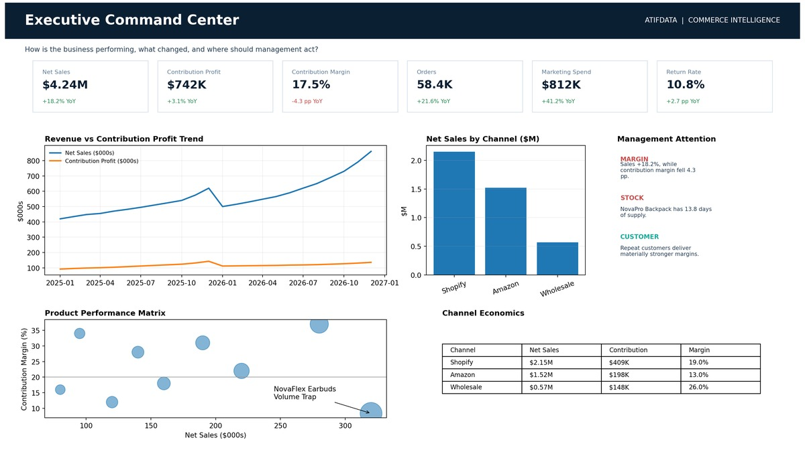

Solutions & case studies
See how AtifData turns data problems into working analytical solutions
Explore data platforms and analytics projects relevant to your business. Demonstrations and scenario results are identified in the project descriptions.
Featured solutions
Featured data platforms and analytics solutions

Microsoft Fabric Enterprise Data Platform & ETL Automation
Microsoft Fabric • PySpark • Power BI
Unified LMS, Oracle ERP and shared-file data in a governed Lakehouse, reducing ETL processing by 70–90%, manual preparation by 80–95%, and report refresh time by 60–80%.

Enterprise On-Premises Data Platform & ETL Automation
Python • SQL Server • Power BI
Built a fully automated LMS data platform without licensed cloud ETL tooling, cutting manual ETL by 80–90%, daily processing by 70–85%, and Power BI loading by 95%+.

Healthcare Operations & Financial Intelligence
PostgreSQL • Power BI • DAX
Embedded hospital intelligence across outpatient, inpatient, procedures, surgery and revenue, increasing strategic data visibility by 300%+ and exposing actionable payer and capacity patterns.

Commerce Intelligence
Demonstration project
Microsoft Fabric • Power BI • Star Schema
Unified sales, marketing, customer, product, inventory and financial data. Scenario analytics surfaced growth, margin pressure, customer-value differences and urgent replenishment risk.
All solutions
Case studies organized by capability and industry
Browse the portfolio in the context most relevant to your business problem.
Data Modernization
Data Modernization
Enterprise platforms, architecture, integration and automated data foundations.
Microsoft Fabric Enterprise Data Platform & ETL Automation
Microsoft Fabric • PySpark • Power BI
Unified LMS, Oracle ERP and shared-file data in a governed Lakehouse, reducing ETL processing by 70–90%, manual preparation by 80–95%, and report refresh time by 60–80%.
Enterprise On-Premises Data Platform & ETL Automation
Python • SQL Server • Power BI
Built a fully automated LMS data platform without licensed cloud ETL tooling, cutting manual ETL by 80–90%, daily processing by 70–85%, and Power BI loading by 95%+.
Healthcare
Healthcare Analytics
Clinical, operational, financial, claims, workforce and population-health analytics.
Healthcare Operations & Financial Intelligence
PostgreSQL • Power BI • DAX
Embedded hospital intelligence across outpatient, inpatient, procedures, surgery and revenue, increasing strategic data visibility by 300%+ and exposing actionable payer and capacity patterns.

AI Clinical Risk & Readmission Intelligence
Azure Data Factory • Python • Power BI
Built a predictive readmission platform with a 0.9748 ROC-AUC model, enabling teams to focus interventions on the highest-risk 5% of patients and quantify major potential savings.

Diabetes Population Health Intelligence
Demonstration project
Azure Data Factory • Python • Power BI
Created longitudinal diabetes monitoring for risk, care gaps and provider panels, identifying 42.9% high-risk patients, 25.2% deteriorating patients and overdue HbA1c follow-up.

Healthcare Claim Denial Intelligence
Demonstration project
Azure Data Factory • Python • Power BI
Unified 120,000 claim rows, quantified $70.1M in value at risk and connected denial patterns to coding, billing lag and payer-contract variation for pre-submission action.

Healthcare Workforce Training & Compliance
SSIS • SQL Server • Power BI
Centralized LMS 365, Oracle ERP and training data for workforce and compliance intelligence, tracking 7,782 employees and exposing completion, engagement and seasonal training patterns.
Retail & E-commerce
Retail & E-commerce Analytics
Commercial performance, customer economics, product profitability, marketing and multi-location operations.
Commerce Intelligence
Demonstration project
Microsoft Fabric • Power BI • Star Schema
Unified sales, marketing, customer, product, inventory and financial data. Scenario analytics surfaced growth, margin pressure, customer-value differences and urgent replenishment risk.

Multi-Branch QSR Sales & Operations
Oracle ERP • Power BI • DAX
Delivered five analytical layers across branches, seasonality, channels, staffing and inventory, identifying 20–25% peak-month uplift and a 66.16% in-store revenue concentration.
Other industries
Business & Industry Analytics
Cross-industry analytics spanning operations, finance, education and policy intelligence.

Well Integrity Monitoring & Operational Risk
Demonstration project
Microsoft Fabric • SQL Server • Power BI
Unified five operational sources into near-real-time well integrity intelligence for safety, compliance, maintenance, cost and asset-risk decision making.

SME Credit Risk & Loan Eligibility
Demonstration project
Microsoft Fabric • Python • Power BI
Risk-tiered 500+ SMEs and analyzed 10,000+ transactions using transparent credit, cash-flow and stability scoring with anomaly and eligibility intelligence.

Scholarship Student Progress Intelligence
Power BI • DAX • Power Query
Tracked 10 weekly tests across four language skills with teacher, class and group drilldowns, quantifying 49.7% writing-score growth and supporting earlier academic intervention.

Student Experience & NPS Intelligence
Power BI • DAX • Power Query
Automated NPS and satisfaction analytics for 6,000+ participants across three program types with dynamic evaluation-period comparison and consistent KPI calculation.

Global Talent Competitiveness Analytics
Power BI • DAX • Power Query
Converted the Global Talent Competitiveness Index into interactive policy intelligence for comparing how countries enable, attract, grow, retain and convert talent into outcomes.
Looking for a similar solution?
Discuss how the approach could apply to your systems, reporting needs and business rules.